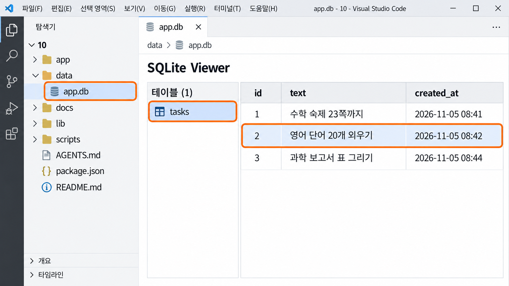

API와
서브에이전트API
与子代理
남은 시간은 계획서대로 하나씩 개발합니다.看自己按钮的记录通过 API 这个窗口存进数据库，
剩下的时间按计划书一件件地开发。
오늘은 두 가지를 보고, 나머지는 개발 시간이다今天看两件事，剩下的是开发时间
10-1에서 내 프로젝트를 Next.js로 변환했습니다. 오늘 새로 볼 것은 두 가지뿐입니다. 화면과 기능이 주고받는 창구인 API가 무엇인지 알고, 그 창구로 보낸 기록이 DB(내 표)에 쌓이는 것을 SQLite Viewer로 직접 봅니다. 그다음은 9회에 세운 개발 계획대로 하나씩 만드는 시간입니다. 막히면 손을 듭니다. 오늘은 선생님 두 분이 1대1로 봐 줍니다.10-1 把自己的项目转换成了 Next.js。今天新看的只有两件事：知道画面和功能之间来回传东西的窗口 API 是什么，再用 SQLite Viewer 亲眼看通过这个窗口发出的记录存进数据库（自己的表）。之后就是按第 9 次课定的开发计划一件件做的时间。卡住就举手。今天有两位老师一对一地帮忙。
| 순서顺序 | 무엇做什么 | 절节 |
|---|---|---|
| ①① | API라는 말을 알고, Codex에게 내 표를 만들게 한다知道 API 这个词，让 Codex 建好自己的表 | 1~31~3 |
| ②② | 핵심 행동 하나를 API로 잇고, DB에 쌓인 기록을 본다把一个核心动作接上 API，看存进数据库的记录 | 4~54~5 |
| ③③ | 서브에이전트가 왜 필요한지 보고, 규칙을 더한다看为什么需要子代理，加上规则 | 66 |
| ④④ | 개발 시간 — 계획서 5항의 다음 일을 하나씩开发时间 — 按计划书第 5 项一件件做 | 77 |
API는 서비스 안의 약속된 창구다API 是服务里约定好的窗口 핵심核心
버튼과 결과 사이에는 눈에 보이지 않는 한 걸음이 있습니다. 화면이 서비스에 종이 한 장(요청)을 건네고, 서비스가 처리한 뒤 답이 적힌 종이(응답)를 돌려줍니다. 종이를 아무 데로나 넣지 않고 정해진 틈으로 넣듯, 화면이 기능에게 일을 부탁하는 정해진 창구를 API라고 부릅니다. 오늘은 내 서비스에 이 창구를 하나 만듭니다.按钮和结果之间，还有一步是看不见的：画面递给服务一张纸（请求），服务处理后递回一张写着答复的纸（响应）。就像纸不能随便塞、要从规定的缝里递进去一样，画面请功能办事的规定窗口叫 API。今天就给自己的服务做一个这样的窗口。

| 말词 | 뜻意思 |
|---|---|
| APIAPI | 화면과 기능이 부탁하고 답하는 약속된 창구. 내 프로젝트에서는 app/api/…/route.js画面和功能互相请求、答复的约定好的窗口。在自己的项目里是 app/api/…/route.js |
| 요청请求 | 화면이 창구에 건네는 것 — 사용자가 입력하거나 고른 값画面递给窗口的东西 — 用户输入或选择的值 |
| 응답响应 | 창구가 돌려주는 것 — 성공했는지, 화면에 보여 줄 결과나 고칠 방법窗口送回的东西 — 是否成功，画面上要显示的结果或改正的方法 |
서비스를 켜고 Codex 창을 연다 — 시작 상태를 확인한다启动服务，打开 Codex 窗口 — 确认起始状态 실습实践
오늘은 서비스를 켜 둔 채로 AI와 이야기합니다. 서비스는 10-1처럼 Codex에게 켜 달라고 하고, 안 되면 터미널에서 직접 켭니다. 터미널에서 켰다면 그 터미널은 서비스가 쓰고 있으니 거기에는 아무것도 치지 않습니다. AI와의 대화는 Codex 창에서 합니다.今天要在服务开着的状态下和 AI 对话。服务像 10-1 那样请 Codex 启动，不行就在终端里自己启动。如果是在终端里启动的，那个终端正被服务占着，什么都别往里输。和 AI 的对话在 Codex 窗口里进行。
- VS Code에서 평소처럼 내 프로젝트 폴더를 연다. 탐색기의
docs안에PRD.md·09_development_plan.md·mockup이 있는지 본다.在 VS Code 里像平时一样打开自己的项目文件夹。看资源管理器里docs中有没有PRD.md·09_development_plan.md·mockup。 - Codex에 「서비스를 켜 줘」를 보낸다.
npm run dev를 샌드박스 밖에서 실행하겠다는 카드가 뜨면 「한 번만 허용」.localhost:3000에서 내 화면이 보이는지 본다. 안 열리면 터미널에npm run dev를 직접 입력한다.给 Codex 发“서비스를 켜 줘”（启动服务）。出现要在沙盒外执行npm run dev的卡片就点“한 번만 허용”。在localhost:3000看是否出现自己的画面。打不开就在终端里自己输入npm run dev。 - 편집기 창 오른쪽 위의 Codex 단추를 눌러 오른쪽에 Codex 창을 연다. 닫혀 있으면
Ctrl+Alt+B로 오른쪽 사이드바를 연다.点编辑器窗口右上角的 Codex 按钮，在右侧打开 Codex 窗口。关着的话按Ctrl+Alt+B打开右侧边栏。 - Codex 입력칸 아래 권한이 승인 요청 그대로인지 본다.
docs\09_development_plan.md(계획서)를Ctrl+Shift+V로 열어 둔다.AGENTS.md맨 아래에 10-1에서 더한 「## 계획서에 먼저 쓴다」가 있는지 본다.看 Codex 输入框下面的权限是否保持 승인 요청（请求批准）。用Ctrl+Shift+V打开docs\09_development_plan.md（计划书）。看AGENTS.md最下面有没有 10-1 加上的“## 계획서에 먼저 쓴다”。
아직 아무것도 고치지 않았는데 안 열리면 환경 문제입니다. AI에게 고치게 하지 말고 손을 듭니다. 10-1의 「막힐 때」를 먼저 봅니다.还什么都没改就打不开，那是环境问题。不要让 AI 去改，举手。先看 10-1 的“卡住时”。
오늘 처음으로 AI가 코드를 고친다 — 계획서에 먼저 쓰게 한 뒤에만今天 AI 第一次改代码 — 只在先写进计划书之后 핵심核心
10-1에서 AGENTS.md에 「계획서에 먼저 쓴다」 규칙을 더했습니다. 오늘 처음으로 Codex가 코드를 고치므로, 이 규칙대로 계획서 5항 아래에 작업 계획을 먼저 씁니다.10-1 在 AGENTS.md 加了“先写进计划书”的规则。今天 Codex 第一次改代码，会照这条规则先在计划书第 5 项下写工作计划。
docs와 코드를 읽고 계획서 5항 아래에 어떻게 고칠지 적는다读docs和代码，在计划书第 5 项下面写打算怎么改- 계획서 말고는 파일을 고치지 않는다除了计划书，不改别的文件
- 오늘 보내는 요청은 모두 이렇게 시작한다今天发的请求都这样开始
- 계획서에 적힌 대로 파일을 고친다按计划书里写的修改文件
- 새 패키지 설치도 여기서 한다安装新包也在这里做
- 「계획서대로 진행해」만 보낸다只发“계획서대로 진행해”
- 「…하려고 해. 작업 계획을 계획서 5항 아래에 적고 멈춰 줘」를 보낸다.发“…하려고 해. 작업 계획을 계획서 5항 아래에 적고 멈춰 줘”（我想做……，把工作计划写在计划书第 5 项下面，然后停下）。
- 계획서를
Ctrl+Shift+V로 열어 내가 원한 것과 대 본다. 다르면 「○○를 ___로 고쳐 적어 줘」.用Ctrl+Shift+V打开计划书，和自己想要的对照。不一样就发“○○를 ___로 고쳐 적어 줘”（把○○改成___再写）。 - 맞으면 「계획서대로 진행해」를 보낸다.对了就发“계획서대로 진행해”。
- 고친 뒤 화면에서 확인하고, 작업 계획의 상태가 「완료」로 바뀌었는지 본다. 바꾸거나 거절한 것은 7항에 직접 쓴다.改完后在画面上确认，看工作计划的状态是否变成“완료”（完成）。我改动或拒绝的，写进第 7 项。
Codex의 첫 코드 작업 — 내 서비스가 기억할 표를 만든다Codex 的第一个代码任务 — 建好自己服务要记住的表 실습实践
오늘 Codex의 첫 코드 작업은 내 서비스가 기억할 표를 만드는 일입니다. 무엇을 기억할지는 9-2 계획 3항 「기억할 기록과 표」에 이미 적었습니다. 방금 본 순서대로 Codex는 계획서 5항 아래에 작업 계획을 먼저 씁니다. 계획서를 Ctrl+Shift+V로 열어 표 이름과 열이 3항과 같은지 대 보고, 맞으면 「계획서대로 진행해」, 다르면 「열은 ___로 고쳐 적어 줘」를 보냅니다.今天 Codex 的第一个代码任务，是建好自己服务要记住的表。要记住什么，9-2 计划第 3 项“기억할 기록과 표”已经写好了。按刚才看的顺序，Codex 会先在计划书第 5 项下面写工作计划。用 Ctrl+Shift+V 打开计划书，对照表名和列是否和第 3 项一样，对了就发“계획서대로 진행해”，不对就发“열은 ___로 고쳐 적어 줘”（列改成___再写）。
docs/09_development_plan.md 3항 「기억할 기록과 표」를 읽어 줘. 내 서비스가 기억할 표를 만들고 싶어. - 저장은 Node에 들어 있는 SQLite(node:sqlite)로 하고, 기록 파일은 data/app.db 하나로 해 줘. 새 패키지는 설치하지 마. - 연결과 표 만들기는 lib/db.js 한 파일에 두고, 표 이름과 열은 3항과 같게 해 줘. - 개인정보(실명 · 연락처) 열은 만들지 마. - 화면과 API는 아직 고치지 마. 이 뒤에 한다. - 진행할 때 data/app.db에 표가 실제로 생기도록 한 번 실행해 줘. 먼저 계획서 5항 아래에 작업 계획을 적고 멈춰 줘. 표 이름 · 열 이름 · 각 열의 뜻도 쉬운 말로 적어 줘.
请读 docs/09_development_plan.md 第 3 项“기억할 기록과 표”（要记住的记录和表）。
我想建好自己服务要记住的表。
- 保存用 Node 自带的 SQLite（node:sqlite），记录文件只用 data/app.db 一个。不要安装新包。
- 连接和建表都放在 lib/db.js 一个文件里，表名和列要和第 3 项一样。
- 不要建个人信息（真实姓名 · 联系方式）的列。
- 画面和 API 先不要改，后面再做。
- 进行时运行一次，让 data/app.db 里真的建好表。
请先在计划书第 5 项下面写好工作计划，然后停下。表名 · 列名 · 每一列的意思也用简单的话写上。lib\db.js를 열고Ctrl+F로CREATE TABLE을 찾는다. 내 표 이름과 열이 3항과 같은가?打开lib\db.js，用Ctrl+F找CREATE TABLE。自己的表名和列和第 3 项一样吗？- 탐색기의
data폴더에app.db가 생겼는가? 계획서의 작업 상태가 「완료」인가?资源管理器的data文件夹里有app.db了吗？计划书里这项工作的状态是“完成”吗？
Viewer로 내 표를 연다 — 아직 비어 있다用 Viewer 打开自己的表 — 现在还是空的 (이어서)（续）
10-1에서 설치한 SQLite Viewer로 data/app.db를 엽니다. 왼쪽에 표 이름들이, 오른쪽에 열과 행이 나옵니다. 아래 그림은 예시 서비스(할 일 정리)의 tasks 표를 연 모습입니다. 내 표도 같은 방법으로 엽니다. 오늘 API를 연결하면 이 빈 표에 행이 생깁니다.用 10-1 安装的 SQLite Viewer 打开 data/app.db。左边是各个表名，右边是列和行。下图是打开示例服务（待办整理）的 tasks 表的样子，自己的表也用同样的方法打开。今天接上 API 后，这张空表里就会出现行。

- 탐색기에서
data폴더를 펼치고app.db를 누른다. 없으면 앞 쪽의 표 만들기가 덜 된 것이다. Codex에 「lib/db.js의 표가 data/app.db에 생기게 한 번 실행해 줘」를 보낸다.在资源管理器里展开data文件夹，点app.db。没有的话，是前一页的建表没做完。给 Codex 发“lib/db.js의 표가 data/app.db에 생기게 한 번 실행해 줘”（运行一次，让 lib/db.js 的表在 data/app.db 里建出来）。 - 왼쪽에서 내 표 이름을 누른다. 열 이름이 개발 계획 3항 「기억할 기록과 표」와 같은지 본다. 행은 아직 0개다.在左边点自己的表名。看列名和开发计划第 3 项“기억할 기록과 표”是否一样。现在还是 0 行。
내 버튼 하나를 API로 내 표에 잇는다把自己的一个按钮通过 API 接到自己的表 실습实践
이제 내 서비스의 핵심 버튼 하나가 API라는 창구로 기록을 내 표에 남기게 합니다. 2절에서 본 순서대로 Codex는 계획서 5항 아래에 작업 계획을 먼저 씁니다. 계획서를 읽고 어떤 버튼이 어느 주소로 무엇을 보내는지 한 줄을 확인한 뒤 「계획서대로 진행해」를 보냅니다.现在让自己服务的一个核心按钮，通过 API 这个窗口把记录留进自己的表。按第 2 节看过的顺序，Codex 会先在计划书第 5 项下面写工作计划。读计划书，确认写着哪个按钮把什么发到哪个地址的那一行，再发“계획서대로 진행해”。
docs/PRD.md와 docs/09_development_plan.md를 읽어 줘. 내 서비스의 핵심 행동 하나를 API로 연결해서, 기록이 내 표(data/app.db)에 쌓이고 화면에 다시 보이게 하고 싶어. - 핵심 행동: ___ (예: 「저장」 버튼을 누르면 입력한 내용이 남는다) - 화면 모양은 그대로 두고, 흉내로 저장하던 곳만 API(app/api/…/route.js)로 바꿔 줘. 표는 3절에서 만든 내 표를 써. - 사용자가 입력한 값은 SQL 문장에 바로 붙이지 말고 ? 자리로 넣어 줘. 먼저 계획서 5항 아래에 작업 계획을 적고 멈춰 줘. 어떤 버튼이 어느 주소(API)로 무엇을 보내는지 한 줄로 적어 줘.
请读 docs/PRD.md 和 docs/09_development_plan.md。 我想把自己服务的一个核心动作接上 API，让记录存进我的表（data/app.db），并在画面上再显示出来。 - 核心动作：___（例：按“保存”按钮，输入的内容就留下来） - 画面样子保持不变，只把用模拟方式保存的地方换成 API（app/api/…/route.js）。表用第 3 节建好的我的表。 - 用户输入的值不要直接拼进 SQL 语句，要用 ? 占位符放进去。 请先在计划书第 5 项下面写好工作计划，然后停下。用一行写清哪个按钮把什么发到哪个地址（API）。
- 계획서를
Ctrl+Shift+V로 연다. 버튼 · 주소(/api/…) · 보내는 것이 한 줄로 적혀 있고, 고칠 파일이app의 화면 · API와lib/db.js뿐인지 본다.用Ctrl+Shift+V打开计划书。看是否用一行写清了按钮 · 地址（/api/…）· 发送的东西，要改的文件是否只有app的画面 · API 和lib/db.js。 - 맞으면 「계획서대로 진행해」를 보낸다. 다르면 「○○를 ___로 고쳐 적어 줘」.对了就发“계획서대로 진행해”。不对就发“○○를 ___로 고쳐 적어 줘”。
- 끝나면 브라우저를 새로 고치고 그 버튼을 실제로 써 본다. 「test」 같은 값 말고 내 서비스에서 실제로 넣을 값을 넣는다.完成后刷新浏览器，真正用一下那个按钮。不要填“test”这种值，填自己服务里真的会填的值。
방금 남긴 기록이 DB에 쌓였는지 본다看刚留下的记录是否存进了数据库 실습实践
화면에 보이는 것만으로는 기억이 아닙니다. data/app.db 파일에 적혀 있어야 다시 켜도 남습니다. SQLite Viewer로 내 표를 다시 열어, 방금 화면에서 남긴 값이 한 행으로 쌓였는지 봅니다. 이것이 오늘 보려던 「API로 보낸 기록이 DB에 쌓인 것」입니다.画面上看得到，还不等于记住了。写进 data/app.db 文件，重新启动后才会还在。用 SQLite Viewer 再打开自己的表，看刚才在画面上留下的值是否成了一行。这就是今天要看的“通过 API 发出的记录存进了数据库”。
- 화면 — 기록을 다시 보는 자리(목록 · 최근 기록 등)에 방금 값이 나오는가?画面 — 再次查看记录的地方（列表 · 最近记录等）出现刚才的值了吗？
- SQLite Viewer —
app.db탭을 닫았다 다시 열고 내 표를 누른다. 같은 값의 행이 생겼는가?SQLite Viewer — 关掉app.db标签页再打开，点自己的表。多出同样值的一行了吗？ - 껐다 켜기 — Codex에 「서비스를 끄고 다시 켜 줘」(카드가 뜨면 「한 번만 허용」) 뒤 새로 고쳐도 그대로인가?关了再开 — 给 Codex 发“서비스를 끄고 다시 켜 줘”（出现卡片就点“한 번만 허용”）后刷新，还在吗？

서브에이전트 — 일을 나눠 맡기는 도우미, 무엇을 나눌지가 중요하다子代理 — 分担工作的帮手，关键是分什么 핵심核心
지금까지는 Codex 하나가 일을 처음부터 끝까지 차례로 했습니다. Codex는 서브에이전트라는 도우미를 여럿 불러, 서로 겹치지 않는 일을 동시에 맡길 수 있습니다. 메인 Codex는 반장처럼 나눠 주고 결과를 모읍니다. 그런데 나눈다고 늘 빨라지지는 않습니다. 선생님 PC에서 같은 일을 재 보니, 1분 안쪽의 일은 나눠 주고 모으는 시간 때문에 같거나 오히려 느렸습니다. 그래서 무엇을 나눌지가 중요합니다.到现在为止，都是一个 Codex 从头到尾按顺序做事。Codex 可以叫来好几个叫子代理的帮手，把互不重叠的事同时交给它们。主 Codex 像班长一样分配、收集结果。可拆开并不总是更快。在老师电脑上测了同样的事，一分钟以内的事因为分配和收集要花时间，结果一样快甚至更慢。所以分什么才是关键。
| 같은 일 (선생님 PC에서 잰 값)同一件事（在老师电脑上测的） | 혼자 차례로一个人按顺序 | 서브에이전트에게 나눠分给子代理 |
|---|---|---|
| 작은 일 — 파일 두 개를 읽고 찾기小事 — 读两个文件找问题 | 약 26초约 26 秒 | 약 48초约 48 秒 |
| 서로 다른 화면 세 개 만들기做三个不同的画面 | 약 70초约 70 秒 | 약 71초约 71 秒 |
| 그림 한 장 + 소개 화면 하나一张图片 + 一个介绍画面 | 약 55초约 55 秒 | 약 60초约 60 秒 |
| 누가谁 | 하는 일做什么 |
|---|---|
| 나我 | 할 일을 고르고, 계획서를 읽고 정하고, 결과를 확인한다选要做的事，读计划书做决定，确认结果 |
| 메인 Codex主 Codex | 계획을 쓰고, 일을 나눠 맡기고, 결과를 모아 보고한다写计划，分配任务，收集结果后报告 |
| 서브에이전트子代理 | 맡은 일 하나만 하고 결과를 돌려준다. Codex 창의 「서브에이전트」에서 「작업 중 · 완료」가 보인다只做分到的一件事，再交回结果。在 Codex 窗口的“서브에이전트”里能看到“작업 중 · 완료” |
맡길 일과 맡기지 않을 일을 가리고, 규칙을 더한다分清要交出去和不交出去的事，再加上规则 (이어서)（续）
아무 일이나 나누면 오히려 느려지거나 서로 같은 파일을 덮어씁니다. 아래 기준으로 가리게 하고, 이 규칙을 내 AGENTS.md에 더합니다. 앞으로 Codex는 작업 계획을 쓸 때 「서브에이전트에게 맡길 일」을 따로 적고, 여러분은 계획서에서 그 나눔이 맞는지 이 표로 확인합니다.什么事都拆开，反而会变慢，或者互相覆盖同一个文件。让它按下面的标准来分，并把这条规则加进自己的 AGENTS.md。以后 Codex 写工作计划时会另外写出“交给子代理的事”，大家用这张表在计划书里确认分得对不对。
| 이런 일这样的事 | 서브에이전트에게交给子代理 | 까닭理由 |
|---|---|---|
| 서로 다른 파일을 만드는 일 (화면 하나 · API 하나)建不同的文件（一个画面 · 一个 API） | 맡긴다交 | 동시에 해도 서로 부딪히지 않는다同时做也不会互相冲突 |
| 찾기 · 읽기 · 검토 (처음 쓰는 사람처럼 확인하기)查找 · 阅读 · 检查（像第一次用的人那样确认） | 맡긴다交 | 파일을 고치지 않아 안전하다不改文件，很安全 |
| 그림 만들기做图片 | 맡긴다交 | 기다리는 시간이 길다等待时间长 |
| 같은 파일을 고치는 일改同一个文件 | 나누지 않는다不拆 | 서로 덮어쓴다会互相覆盖 |
| 앞 일이 끝나야 하는 일 (표 → API)要等前一件做完的事（表 → API） | 나누지 않는다不拆 | 순서가 바뀌면 틀린다顺序乱了就会出错 |
| 1분 안쪽에 끝날 작은 일一分钟以内就能做完的小事 | 나누지 않는다不拆 | 나누고 모으는 시간이 더 걸린다拆分和收集更花时间 |
AGENTS.md 맨 아래에 「## 서브에이전트」를 만들고 아래 규칙을 더해 줘. 다른 줄은 고치지 마. - 작업 계획을 쓸 때 서브에이전트에게 맡길 일과 직접 할 일을 나눠 적는다. - 서로 겹치지 않는 일(다른 파일 만들기 · 찾기 · 검토 · 그림 만들기)은 서브에이전트에게 나눠 맡겨 동시에 한다. - 같은 파일을 고치는 일, 앞 일이 끝나야 하는 일, 금방 끝날 작은 일은 나누지 않는다. - 서브에이전트의 결과는 모아서 확인한 뒤 알려 주고, 계획서의 상태를 바꾼다.
请在 AGENTS.md 最下面新建“## 子代理（서브에이전트）”，加上下面的规则。其他行不要改。
- 写工作计划时，分开写交给子代理的事和自己直接做的事。
- 互不重叠的事（建不同的文件 · 查找 · 检查 · 做图片）分给子代理同时做。
- 改同一个文件的事、要等前一件做完的事、很快就能做完的小事不要拆开。
- 把子代理的结果收齐确认后再告诉我，并改计划书里的状态。Codex는 대화를 시작할 때 AGENTS.md를 읽습니다. 맨 아래에 ## 서브에이전트가 생겼는지 보고, Codex 창 위쪽의 새 대화를 연 뒤 개발 시간을 시작합니다.Codex 在对话开始时读 AGENTS.md。看最下面是否多了 ## 子代理（서브에이전트），在 Codex 窗口上方开새 대화（新对话）后再开始开发时间。
계획서 5항의 다음 일을 하나씩 — 문서를 고쳐 가며 만든다按计划书第 5 项一件件做 — 边改文档边开发 실습实践
이제부터 수업 끝까지 개발 시간입니다. 9회에 세운 계획서 5항 개발 순서에서 다음 일 하나를 골라, 아래 순서를 되풀이합니다. 하나가 끝날 때마다 계획서의 상태와 PRD가 바뀌므로, 문서를 보면 지금 어디까지 왔는지 바로 압니다. 기능별 방법은 11회 교과서의 레시피와 사례를 펴 봅니다. 막히면 손을 듭니다.从现在到下课都是开发时间。从第 9 次课定的计划书第 5 项开发顺序里选下一件事，反复下面的顺序。每做完一件，计划书的状态和 PRD 都会更新，所以一看文档就知道现在走到了哪里。具体功能的做法，翻第 11 次课课本里的做法和案例。卡住就举手。
docs/09_development_plan.md 5항에서 다음에 할 일을 골랐어: ___ 이 일을 작업 계획으로 5항 아래에 적고 멈춰 줘. 서브에이전트에게 맡길 일과 직접 할 일을 나눠 적고, 서비스 방향이 바뀌면 고칠 파일에 docs/PRD.md도 넣어 줘.
我从 docs/09_development_plan.md 第 5 项里选了下一件要做的事：___ 请把这件事作为工作计划写在第 5 项下面，然后停下。 分开写交给子代理的事和自己直接做的事；如果服务方向变了，要改的文件里也放上 docs/PRD.md。
- 계획서를
Ctrl+Shift+V로 읽는다. 서브에이전트에게 맡긴 일이 6절 표의 기준에 맞는지 본다.用Ctrl+Shift+V读计划书。看交给子代理的事是否符合第 6 节表里的标准。 - 맞으면 「계획서대로 진행해」. Codex 창의 「서브에이전트」에서 맡은 일이 「작업 중 → 완료」로 바뀌는 것을 본다.对了就发“계획서대로 진행해”。在 Codex 窗口的“서브에이전트”里看分出去的事从“작업 중”变成“완료”。
- 화면 · SQLite Viewer로 확인하고, 계획서 상태 「완료」와 PRD 「바뀐 기록」을 본다. 바꾸거나 거절한 것은 7항에 직접 쓴다.用画面 · SQLite Viewer 确认，看计划书状态“完成”和 PRD 的“바뀐 기록”。改动或拒绝的，自己写进第 7 项。
- AI가 일하는 동안 손을 놓지 않는다. 계획서 5항에서 다음 일을 고르거나, 방금 끝난 기능을 화면에서 눌러 본다. 그리고 다음 일로 처음부터 되풀이한다.AI 干活时别闲着：从计划书第 5 项里选下一件事，或者在画面上按一按刚做好的功能。然后用下一件事从头反复。
API로 보낸 기록이 DB에 쌓였고, 계획서대로 만들기 시작했다通过 API 发出的记录存进了数据库，也开始按计划书开发了
오늘은 API라는 창구를 알고, Codex에게 내 표를 만들게 한 뒤 핵심 버튼 하나를 그 창구로 이었습니다. 그리고 그 기록이 DB(data/app.db)에 쌓이는 것을 SQLite Viewer로 보았습니다. 서브에이전트에게 일을 나눠 맡기는 규칙을 더하고, 계획서 5항의 다음 일부터 개발을 시작했습니다.今天认识了 API 这个窗口，让 Codex 建好了自己的表，再把一个核心按钮通过这个窗口接上。然后用 SQLite Viewer 看到了那条记录存进数据库（data/app.db）。加上了把工作分给子代理的规则，并从计划书第 5 项的下一件事开始开发。
- API는 화면과 기능이 주고받는 약속된 창구다. 보낸 기록은 DB(내 표)에 쌓이고, Viewer로 직접 본다.API 是画面和功能之间约定好的窗口。发出的记录存进数据库（自己的表），用 Viewer 亲眼看。
- 만들 때는 계획서에 먼저 → 읽고 「계획서대로 진행해」 → 화면 · Viewer로 확인 → 문서 갱신을 되풀이한다.开发时反复 先写进计划书 → 读过发“계획서대로 진행해” → 用画面 · Viewer 确认 → 更新文档。
- 서로 겹치지 않는 일은 서브에이전트에게 나눠 맡기고, 같은 파일 · 순서가 있는 일 · 작은 일은 나누지 않는다.互不重叠的事分给子代理；同一个文件 · 有先后顺序的事 · 小事不拆。
AGENTS.md를 바꾸면 새 대화에서 시작한다.改了AGENTS.md，就在新对话里开始。
11회도 개발 시간입니다. 오늘 하던 계획서 5항의 다음 일부터 이어서 합니다. 11회 교과서는 기능별 레시피와 막힐 때 사례를 모은 가이드북입니다.第 11 次课也是开发时间，从今天计划书第 5 项做到的下一件事接着做。第 11 次课的课本是汇集了各功能做法和卡住时案例的指南。
11. 서비스 개발하기 →11. 开发服务 →이럴 때는 이렇게 한다遇到这些情况就这样做 필요할 때需要时
코드를 고치기 시작하면 막히는 일이 늘어납니다. 당황하지 말고 화면과 터미널에 보인 글자를 먼저 읽습니다. 내 상황과 같은 줄을 찾아 오른쪽대로 해 보고, 그래도 안 되면 터미널의 빨간 글자를 지우지 말고 그대로 둔 채 손을 듭니다.开始改代码后，卡住的情况会变多。别慌，先读画面和终端里显示的字。找到和自己情况一样的那行照右边做，还不行就别清掉终端里的红字，保留着举手。
| 요청 ①을 보냈는데 AI가 계획서에 쓰지 않고 바로 코드를 고친다发了请求 ①，AI 却没写计划书就直接改代码 | 멈추게 하고 「방금 고친 것을 되돌리고, AGENTS.md대로 계획서 5항 아래에 작업 계획부터 적어 줘」를 보냅니다. 묻는 카드가 뜨면 「거부」를 누릅니다.让它停下，发“방금 고친 것을 되돌리고, AGENTS.md대로 계획서 5항 아래에 작업 계획부터 적어 줘”（把刚改的改回去，按 AGENTS.md 先在计划书第 5 项下面写工作计划）。出现询问卡片就点“거부”（拒绝）。 |
| Codex 창에 「승인」을 묻는 카드가 뜬다Codex 窗口里出现询问“批准”的卡片 | Codex가 내 프로젝트 폴더 밖의 일이나 인터넷이 필요한 명령을 하려는 것입니다. 무슨 명령인지 읽고, 방금 설명에서 들은 일이면 「한 번만 허용」을 누릅니다. 처음 듣는 패키지 설치나 폴더 밖의 파일이면 「거부」를 누르고 「왜 필요한지 먼저 설명해 줘」를 보냅니다.这是 Codex 要做自己的项目文件夹以外的事，或执行需要上网的命令。读一下是什么命令，是刚才说明里讲过的就点“한 번만 허용”（只允许一次）。是第一次听说的包安装或文件夹以外的文件，就点“거부”（拒绝），并发“先说明为什么需要”。 |
| 브라우저에 빨간 오류 화면이 뜬다浏览器出现红色的错误画面 | 오류 화면의 맨 위 두 줄을 복사해 Codex에 붙이고 「처음 달라진 한 단계만 찾아 고칠 방법을 계획서 5항에 적어 줘」를 보냅니다.复制错误画面最上面的两行贴给 Codex，再发“처음 달라진 한 단계만 찾아 고칠 방법을 계획서 5항에 적어 줘”（只找出最先出偏差的那一步，把改法写进计划书第 5 项）。 |
| AI가 「다 했다」는데 화면이 그대로다AI 说“改好了”，画面却没变 | 브라우저를 새로고침합니다. 그래도 같으면 Codex에 「서비스를 끄고 다시 켜 줘」를 보냅니다. 터미널에서 켰다면 Ctrl+C 후 npm run dev.刷新浏览器。还是一样，就给 Codex 发“서비스를 끄고 다시 켜 줘”。在终端里启动的话，按 Ctrl+C 后再 npm run dev。 |
app.db를 눌렀더니 깨진 글자가 보인다点 app.db 后看到乱码 | SQLite Viewer가 아니라 기본 편집기로 열린 것입니다. 아무것도 고치지 말고 탭을 닫고, 10-1에서 Viewer를 설치했는지 확장 화면에서 확인한 뒤 다시 엽니다.这是没用 SQLite Viewer，而是用默认编辑器打开了。什么都别改，关掉标签页，在扩展画面确认 10-1 是否装好了 Viewer，再重新打开。 |
이럴 때는 이렇게 한다遇到这些情况就这样做 (이어서)（续）
저장 표가 어긋나거나 AI가 약속 밖의 일을 하자고 할 때입니다. 이때도 바로 「진행해」를 보내지 말고, 이유부터 듣습니다. 빨간 글자는 지우지 말고 첫 줄을 복사해 그대로 전합니다.这是保存的表对不上，或 AI 提议做约定以外的事的时候。这时也别马上发“진행해”，先听理由。红字不要清掉，复制第一行原样告诉它。
터미널에 no such table이나 has no column named가 나온다终端出现 no such table 或 has no column named | AI가 표 모양을 바꿨는데 app.db에는 예전 표가 남아 있는 경우가 많습니다. 빨간 글자 첫 줄을 Codex에 붙여 「처음 달라진 한 단계만 찾아 계획서 5항에 적어 줘」를 보냅니다. app.db를 지우는 것은 손을 들어 확인받은 뒤에만 합니다.多半是 AI 改了表的样子，而 app.db 里还留着以前的表。把红字的第一行贴给 Codex，发“처음 달라진 한 단계만 찾아 계획서 5항에 적어 줘”。删除 app.db 要先举手确认后才做。 |
AI가 npm install 무엇을 하자고 한다AI 说要 npm install 某某 | 오늘의 API와 저장에는 보통 새 패키지가 필요 없습니다. 「이 패키지가 왜 필요한지, 없이 할 수 있는지 설명해 줘」를 보내고, 꼭 필요하다는 설명이 맞을 때만 「진행해」를 보냅니다.今天的 API 和保存通常不需要新包。发“说明为什么需要这个包，不装能不能做”，只有确实必需的说明说得通时，才发“진행해”。 |
| AI가 TypeScript나 새 폴더 구조로 다 바꾸자고 한다AI 提议全部改成 TypeScript 或新的文件夹结构 | 「지금 버전과 구조 그대로 두고, app 안의 화면 · API와 lib/db.js만 고쳐 줘」를 보냅니다.发“지금 버전과 구조 그대로 두고, app 안의 화면 · API와 lib/db.js만 고쳐 줘”（版本和结构保持现在的样子，只改 app 里的画面 · API 和 lib/db.js）。 |
| Codex가 「한도」나 「결제」 때문에 멈췄다고 한다Codex 说因为“额度”或“付款”停下了 | 내 잘못이 아닙니다. 화면을 그대로 두고 손을 듭니다. 기다리는 동안 계획서 5항의 다음 일을 고릅니다.不是自己的错。保持画面不动，举手。等的时候从计划书第 5 项里选下一件事。 |